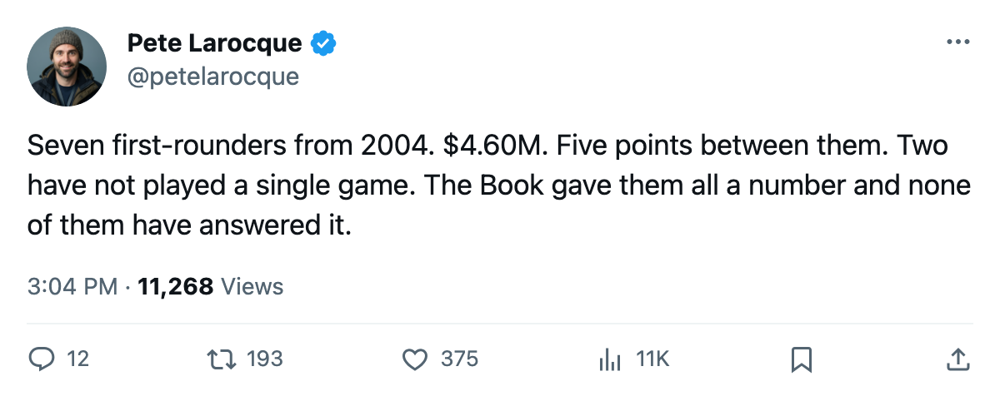
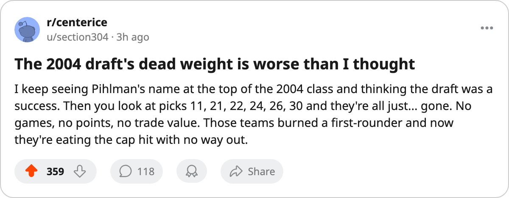

7 First-Round Picks, $4.60M, 5 Points: The 2004 Draft's Ghosts
The class that produced Pihlman and Lydman also produced seven lottery-era selections who cannot dress, cannot score, and cannot be traded for anything.
 Pete LarocqueScouting editor · The Prospect File
Pete LarocqueScouting editor · The Prospect File
Seven first-round picks from the 2004 draft have combined for 51 games played and 5 points this season. Their aggregate salary cap hit is $4.60M. Two of them have not suited up. One has played 1 shift. They are 20 and 21 years old, and their clubs own them through next season or beyond.
I tracked the 2004 class from the top last week. Tuomo Pihlman78 [1001038] leads it with 44 points at Minnesota. Tuomas Lydman77 [1001012] has 24 at Anaheim. Karel Duba77 [1001035] has 19 at Los Angeles. Kristian Timander74 [1001045] has 14 at Dallas. Those four carry seven-figure contracts and they play.
The other seven cost $4.60M and they don't.
| Player | Draft | Club | Overall | GP | Points | Salary | Yrs Left |
|---|---|---|---|---|---|---|---|
| Mika Sulku66 | #4 |  Calgary Flames Calgary Flames | 66 | 40 | 5 | $0.94M | 0 |
| Robert Olvestad66 | #11 |  Buffalo Sabres Buffalo Sabres | 66 | 6 | 0 | $1.03M | 2 |
| Mathieu Landry72 | #22 |  Florida Panthers Florida Panthers | 72 | 1 | 0 | $0.94M | 1 |
| Topi Lehto67 | #24 |  Philadelphia Flyers Philadelphia Flyers | 67 | 1 | 0 | $0.85M | 2 |
| Yury Stashan68 | #26 |  Tampa Bay Lightning Tampa Bay Lightning | 68 | 3 | 0 | $0.83M | 2 |
| Maxim Zholtok65 | #21 |  Edmonton Oilers Edmonton Oilers | 65 | 0 | 0 | $0.82M | 0 |
| Niklas Hassinen64 | #30 |  Dallas Stars Dallas Stars | 64 | 0 | 0 | $0.88M | 1 |
Mika Sulku is the least dead of the dead. Forty games, five points, 306 minutes at Calgary. His overall sits at 66, his base is 75, so the Index has him nine below his Book number. He is on an expiring deal with zero years left. Calgary can let him walk in July and reclaim $0.94M with no cap penalty. That is the only clean exit among these seven.
Robert Olvestad is the expensive one. Buffalo holds him at $1.03M with two contract years remaining, a 2004 #11 overall who has played 6 games and logged 45 minutes. His base overall is 72. He reads 66 today. Six points below his own floor, six games of evidence, 45 minutes of ice time. The Sabres bought two more years on a man they cannot dress.
Maxim Zholtok has not played. Edmonton drafted him #21 overall in 2004, he carries a 65 overall on a $0.82M deal that expires this year, and he has zero games in the column. Two years after being a first-rounder, he is not in the lineup. His contract_years reads 0, so Edmonton can move on without buying out anything.
Niklas Hassinen at Dallas is the same story one pick lower. #30 overall, 0 games, $0.88M, 1 year left. Dallas has 62 points and owns the Pacific Division. They do not need Hassinen and they cannot pretend the pick worked.
Yury Stashan played 3 games at Tampa Bay. Topi Lehto played 1 at Philadelphia. Mathieu Landry played 1 at Florida. Three men who were first-round picks two summers ago have combined for 5 games and 0 points this season.
The book does not recover
The Bureau's Book prints 50-99 potential on every young player. It does not print a floor, but it prints an overall. All seven of these men sit at or below 72 overall. None of them carries a form number in the risers or fallers lists. They do not appear on the Development Index at all, which means their current form has not moved enough from base to register.
Compare: Pihlman's potential reads 56 and he has 44 points. The Book was wrong about his ceiling and it still produced a Calder winner. These seven have potential grades in the high 60s and low 70s, which the Bureau treats as likely role-player range, and they cannot fill that role.
What the cap does
$4.60M across seven men who produce nothing is not the most expensive bad contract in this league. A single veteran on a $5M deal who loses his speed gets more column inches. But these are 20-year-olds on entry-level money who will never command a trade return. You cannot ship Olvestad's $1.03M to another club for a draft pick. You cannot dangle Stashan's $0.83M and expect a call back. The money is low enough that nobody takes it for a pick, and high enough that it clogs a roster spot the club cannot fill with a waiver claim.
The calendar has what it calls the rookie draft on 2006-06-08. These seven were drafted the year before that. They have one year left, two at most. If the Book's numbers do not climb by then, the clubs own a problem that gets worse every time they refresh the roster and see the same names, the same zeros, the same cap hit eating a slot a prospect from the Junior Bureau could use.
Sulku walks in July. Zholtok can be released the same month. The other five are locked in through at least one more season of 45 minutes here, 3 games there, and a point total that rounds to nothing.

